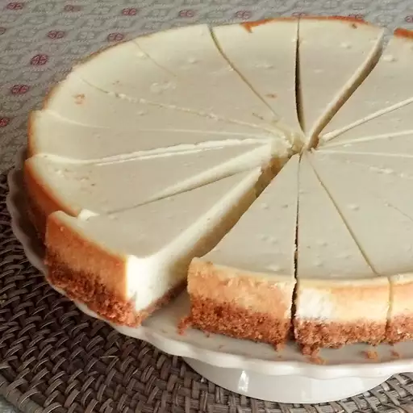

Home
Perfect Cheesecake Everytime

Description
Simple, but elegant cheesecake made in 30 minutes. This will get you great reviews from friends. You also will not order cheesecake out again. If it cracks, garnish with fruit to hide the cracks.
Ingredients
- 1 ½ cups crushed graham crackers
- 1 teaspoon white sugar
- ⅛ teaspoon ground cinnamon (Optional)
- ¼ cup chopped pecans (Optional)
- 4 tablespoons melted butter
- 2 (8 ounce) packages cream cheese, softened
- 3 eggs
- 1 cup sugar
- 1 teaspoon vanilla extract
- 1 (16 ounce) container sour cream
Steps
- Preheat oven to 350 degrees F (175 degrees C). Whisk together the crushed graham crackers, the 1 teaspoon sugar, cinnamon, and walnuts. Stir in the butter. Press the mixture into the bottom of a 9 inch springform pan.
- Bake in the preheated oven for 10 minutes. Remove from oven; allow crust to cool.
- Beat the cream cheese with the eggs on medium-low with an electric mixer until smooth. Beat in the 1 cup sugar and vanilla. Fold in the sour cream just until blended. Do not overmix; ovemixing causes the cheesecake to crack. Pour into the cooled crust.
- Bake in the preheated oven for 30 minutes. Turn oven off. When the cheesecake has reached room temperature, chill in refrigerator for 8 hours before serving.
Sources